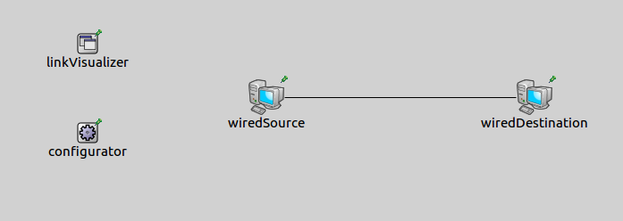
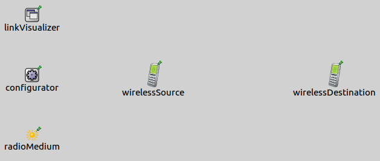
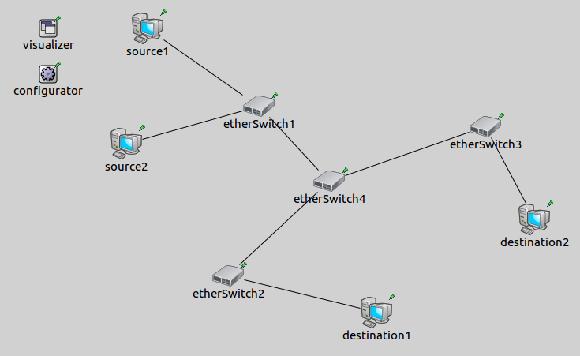
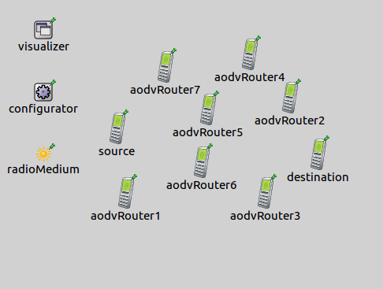

In computer networks, networked computing devices exchange data with each other using a data link. The connections between nodes are established using either cable media or wireless media. If we look at a network topology, we dont't know whether there is a data link between two nodes. When a network node receives a packet successfully from another device, a data link is established between the nodes. This is shown by the DatalinkVisualizer.
The example consists of 4 simulation models, each demonstrating different features of data link visualization.
The DatalinkVisualizer keeps track of active data links in a network. A link becomes active between two nodes when a packet arrives at the receiver node's data link layer from the source node's data link layer. By default links are not displayed, we can enable their visualization by switching the displayLinks parameter to true.
The links are represented visually by solid arrows. The arrow's starting point is the sender node and its endpoint is the receiver node. The visualizer has filtering parameters, like nodeFilter, interfaceFilter and packetFilter. Using these we can specify which data links are shown. By default all nodes, all interfaces and all packets are considered for displaying data links. It is possible to use logical expressions as the filter's parameter, e.g packetFilter = "ping* or tcp*" shows the ping and the tcp data links.
In this configuration we show how to enable the visualization's default look. We visualize data links both in a wired and in a wireless network.
The wired network contains two Standardhosts, an IPv4NetworkConfigurator module which prepares hosts for communication and a DataLinkVisualizer module which displays the data links. In wireless network the type of the hosts is AdhocHost and there is an additional Ieee80211ScalarRadioMedium module which handles the radio channel.


In both configurations the source host pings the destination host and an additional line of code enables the DatalinkVisualizer. Here is how to use ping:
When we start the simulations, here is what happens:
When a packet reaches its destination's data link layer, the data link is activated between the nodes and an arrow is shown pointing from the sender towards the receiver. Then the arrow fades out in real time.
This configuration demonstrates the visualization of data links in a complex network. In this simulation we also show how the packetFilter and the nodeFilter works. Here is the network for this configuration:

The network has an IPv4NetworkConfigurator module and an IntegratedVisualizer module. The topology consists of four switches and four endpoints: two source hosts and two destination hosts. The sources ping the destinations. The visualization of data links is enabled, but it is filtered. Links are displayed only if a ping message is sent. We adjust the fadeOutMode and the fadeOutTime parameters, so the data links don't fade out before the next ping messages aren't sent. Here is the configuration for the visualization:
The following animation shows what happens when we start the simulation:
Only ping messages activate the visualization of data links between the nodes, because of the packetFilter. The visualized data links are represented by solid arrows. The arrows start to fade out in simulation time, but they don't disappear completely, because the fadeOutTime is greater than the sending interval of ping messages. Only one data link can be activated per direction between the nodes. If a data link is visualized already between two nodes and another packet activates a data link between the same nodes, the arrow between those nodes is only reinforced.
It is possible to display ping data links between given nodes. For that we use nodeFilter parameter. In this example we display the data links only between the source1 and the destination1. Here is how to configure the visualizer:
VIDEO
The goal of this configuration is displaying dynamically changing active data links in a wireless environment. Here is the network for this configuration:

The type of all nodes is AODVRouter. These ad hoc nodes are placed randomly on the playground and they move also randomly between borders. The source node has a ping application, that sends ping messages in every seconds. The communication range is reduced to get a non-trivial path between source and destination. Here is the configuration:
The following animation illustrates what happens when the simulation is run:
The nodes exchange routing informations, then the source starts to ping the destination. When a ping message reaches the next node's data link layer, the link is shown between the nodes. If the route is changed between the source and the destination new data links are activated.
This example only demonstrated the key features of data link visualization. For more information, refer to the DatalinkVisualizer NED documentation.